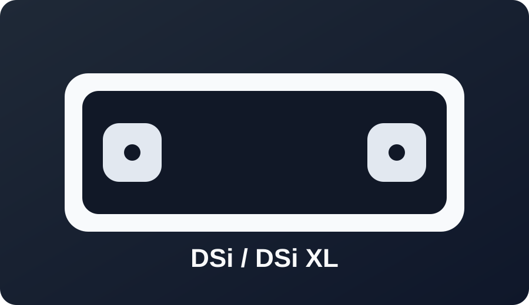

DSi / DSi XL

Best path: Memory Pit (or compatible DSiWare entry) based on your firmware.
Firmware 1.4.5 and below remains the common target path with SD access.

Best path: Memory Pit (or compatible DSiWare entry) based on your firmware.
Firmware 1.4.5 and below remains the common target path with SD access.